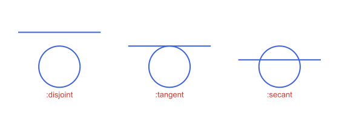
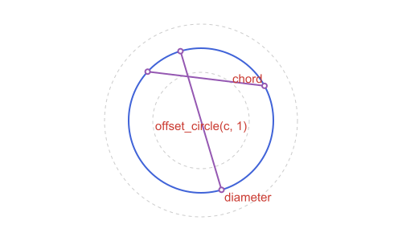

Circles: How They Relate
The two circles from Circles: Basics:
using Apollonius
c = APCircle2(APPoint(0.0, 0.0), 5.0)
c1 = APCircle2(APPoint(0.0, 0.0), 3.0)
c2 = APCircle2(APPoint(8.0, 0.0), 2.0)Similitude centers and common tangents
Two circles have two centers of similitude: the external_similitude_center (where their external common tangents meet) and the internal_similitude_center (where the internal ones, the ones that cross between the circles, meet). external_tangent_lines and internal_tangent_lines return those tangent lines directly, each as APLine(p1, p2) with p1/p2 the actual points of tangency on c1/c2 respectively (not the similitude center, even though every one of these lines does pass through it):
external_similitude_center(c1, c2) # [24.0, 0.0]
internal_similitude_center(c1, c2) # [4.8, 0.0]
ext = external_tangent_lines(c1, c2)
int = internal_tangent_lines(c1, c2)
distance(ext[1].p1, c1.center), distance(ext[1].p2, c2.center) # (c1.r, c2.r)(2.9999999999999996, 1.9999999999999996)
The external center is far from both circles here because c1 and c2 have fairly close radii. The closer two radii are, the further out the external center sits, reaching infinity (parallel tangents) when the radii are exactly equal (in which case external_similitude_center throws, since there is no finite point to return).
These similitude centers are also exactly the points used by the Apollonius/tangent-circle constructions (see Tangency & Apollonius Problems), since a circle tangent to two given circles is related to them by a homothety centered at one of these two points. Applied to a triangle's own circumcircle and incircle, they land on two more named triangle centers: external_similitude_center(circumcircle(t), incircle(t)) is Kimberling X(56), and internal_similitude_center(circumcircle(t), incircle(t)) is X(55) (see Triangles: The Classical Centers).
tangent_parallel gives the two tangent lines to a circle parallel to a given line: the tangents at the two ends of the diameter perpendicular to it. In each returned line, the first point is the point of tangency:
t1, t2 = tangent_parallel(c, APLine(APPoint(0.0, 3.0), APPoint(1.0, 4.0)))(APLine([3.5355339059327373, -3.5355339059327373] -> [7.071067811865475, 0.0]), APLine([-3.5355339059327373, 3.5355339059327373] -> [-7.071067811865475, 0.0]))
Choosing among the intersections
intersection returns a Vector of the points where two objects meet, and the order is fixed for the two most common pairs:
- line and circle: in the direction of the line, from
l.p1towardsl.p2; - two circles: the first point is on the left when going from the first center to the second, the second is on the right.
For any other pair, do not rely on the order: pick the point you want by where it is, with nearest_point(points, p), or as "the other one" with other_intersection(a, b, known). The second is the usual case of a line through a point of a circle: it returns the second intersection, or nothing when the line is tangent there.
c = APCircle2(APPoint(0.0, 0.0), 5.0)
l = APLine(APPoint(-5.0, 0.0), APPoint(0.0, 3.0)) # goes through (-5, 0), a point of c
other_intersection(l, c, APPoint(-5.0, 0.0)) # the second point where l meets c[2.3529411764705883, 4.411764705882353]pts = intersection(c, APCircle2(APPoint(6.0, 0.0), 5.0)) # two points, above and below the x-axis
nearest_point(pts, APPoint(3.0, 10.0)) # the upper one[3.0, 4.0]angle_measure_intersection(c1, c2) is the measure of the angle at which two circles cross, between 0 (they touch) and π/2 (they are orthogonal), or nothing when they do not meet.
c1 = APCircle2(APPoint(0.0, 0.0), 5.0)
angle_measure_intersection(c1, orthogonal_circle(c1, APPoint(13.0, 0.0))) ≈ pi / 2true
A line and a circle give their points along the line, and two circles give the point on the left first. For any other pair the order is not specified: choose with nearest_point or other_intersection.
How two circles (or a line and a circle) relate
circles_position and line_circle_position classify the relationship between two circles, or a line and a circle, as a Symbol rather than a single boolean, useful when you need to distinguish, say, "tangent" from "disjoint" from "one contains the other" in one call instead of chaining several predicates:
circles_position(APCircle2(APPoint(0.0, 0.0), 5.0), APCircle2(APPoint(2.0, 0.0), 3.0)) # :tangent_int
line_circle_position(APLine(APPoint(0.0, 5.0), APPoint(1.0, 5.0)), APCircle2(APPoint(0.0, 0.0), 5.0)) # :tangent:tangent
circles_position returns one of :identical, :concentric, :disjoint_ext, :tangent_ext, :secant, :tangent_int or :disjoint_int; line_circle_position returns one of :disjoint, :tangent or :secant.

Chords, diameters and offset circles
chord(c, θ1, θ2) is the segment between the points of a circle at two polar angles, and diameter(c, angle) the one through the point at angle and its antipode. offset_circle(c, d) is the concentric circle whose radius is c.r + d, the counterpart of offset_line (a negative d shrinks it, and it must stay positive):
c_o = APCircle2(APPoint(0.0, 0.0), 3.0)
chord(c_o, 0.5, 2.4), diameter(c_o, 5.0)(APSegment([2.6327476856711183, 1.438276615812609] -> [-2.2121811466237364, 2.0263895416534528]), APSegment([0.8509865563896788, -2.8767728239894153] -> [-0.8509865563896784, 2.8767728239894153]))offset_circle(c_o, 1.0), offset_circle(c_o, -1.0)(APCircle2([0.0, 0.0], 4.0), APCircle2([0.0, 0.0], 2.0))